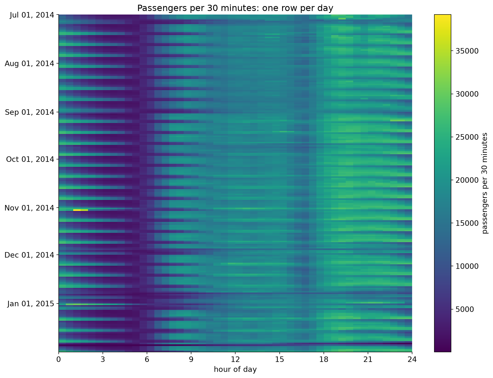
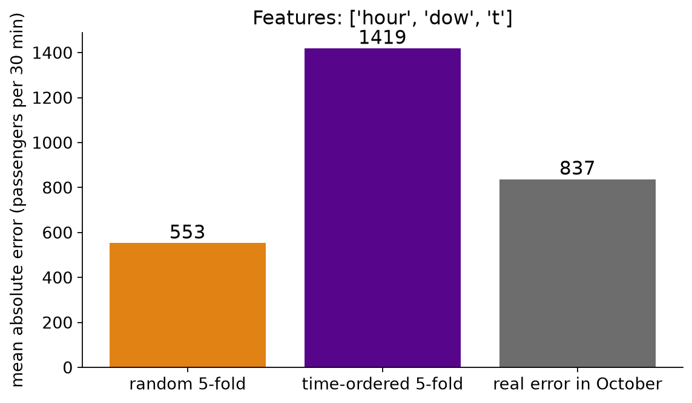
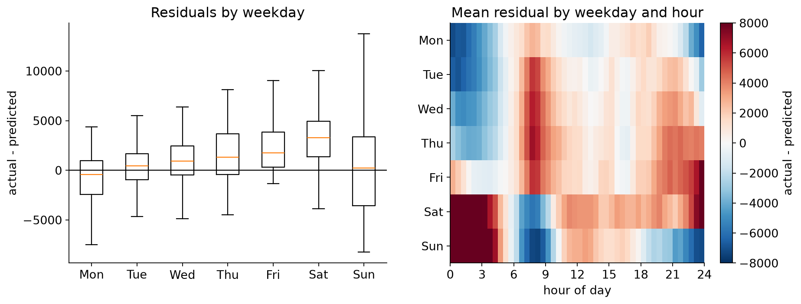
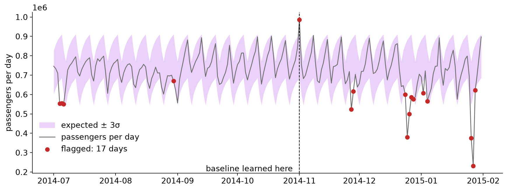
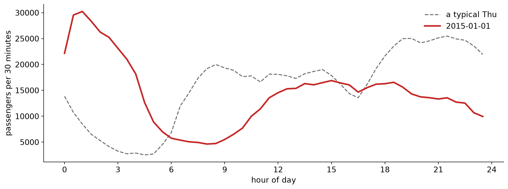

VisML Lab: Time Series, Hands-On
DS-GA 3001 - Fall 2026 - Seven Months of NYC Taxi Passengers
NYU Center for Data Science
2026-11-17
Lab Overview
- Today: apply tonight’s lecture to a real series, the number of NYC taxi passengers every 30 minutes for seven months
- One Colab notebook, six short experiments. Work in pairs
- For every experiment: predict first, then run, then explain any surprise
- Three parts: see the series, evaluate a forecaster, find anomalies
Plan for tonight (50 minutes)
| Minutes | |
|---|---|
| Open the notebook, load the data | 3 |
| Part 1: see the series (Experiments 1-2) | 14 |
| Part 2: evaluate a forecaster (Experiments 3-4) | 13 |
| Part 3: find anomalies (Experiments 5-6) | 13 |
| Debrief and project check-in | 7 |
Experiment 4 is optional if we run short.
Set-up
Notebook: time_series.ipynb on Colab
- Needs a Google account. Nothing to install: pandas, matplotlib and scikit-learn are already in Colab
- Run the first code cell. It downloads the data and should print 10,320 rows
- The data: NYC taxi passengers per 30-minute interval, July 1, 2014 to January 31, 2015, from the Numenta Anomaly Benchmark (built from NYC Taxi and Limousine Commission trip records)
- The unit is passengers, not trips: the benchmark describes the values as the total number of taxi passengers in each 30-minute bucket
Part 1: See the Series
Experiments 1 and 2 · about 14 minutes
The same 10,320 numbers as a line, as daily totals, and as a heat map.
Experiment 1: One Line, Two Resolutions
Predict: the first chart draws all 10,320 half-hour values as one line. What will you be able to read from it?
- Run the full-resolution line chart. What can you actually see?
- Before running the daily totals: write down two dates between July and January that you expect to be unusual for taxis in New York
- Run the daily totals. Were your dates right?
- Change
STARTin the one-week chart. What does a normal week look like?
Connect to lecture: aggregation is a design decision. Each bin size shows some things and hides others.
Experiment 2: The Whole Series as a Heat Map
Predict: one row per day, one column per half hour, color for passengers. What will a weekend look like? What will a snowstorm look like?
- Run the heat map. Nothing is aggregated: every value is on screen
- A bright band at the left edge comes back every seven rows. What is it?
- Find at least three rows that break the pattern and estimate their dates
- Run the average-week chart. Which weekday has the latest peak?
Connect to lecture: heat maps put time on both axes here, so the cyclic structure (hour of day) and the sequential structure (date) are visible together.
What You Should See: the Heat Map
- Every seventh row is bright from midnight to 4 am: weekend nights
- Dark band at 3 to 5 am, every day
- Late January: one row almost entirely dark
- Late December: several dim rows in a row
- Near November 1: one very bright dash around 1 am

Part 2: Evaluate a Forecaster
Experiments 3 and 4 · about 13 minutes
Train on July to September. How good will the model be in October?
Experiment 3: Random Split vs. Time-Ordered Split
Predict: the model gets hour of day, weekday and a time index (days since July 1). Which estimate will be closest to its real error in October: random 5-fold or time-ordered 5-fold? Will the random estimate be too high or too low?
- Run the cell with
USE_TIME_INDEX = True. Compare the three bars - Set
USE_TIME_INDEX = Falseand run again. What happened to the gap? - Which of the two models would you deploy? Which model does each evaluation prefer?
- Run the per-fold cell. Which fold drives the time-ordered average?
Connect to lecture: a random split asks the model to interpolate between neighbors. Forecasting is extrapolation.
What You Should See: Three Estimates of One Error
Mean absolute error, in passengers per 30 minutes:
| Features | Random | Time-ordered | Real October |
|---|---|---|---|
| hour, weekday, time index | 553 | 1,419 | 837 |
| hour, weekday | 1,127 | 1,248 | 1,239 |
- With the time index, random 5-fold says 553. The real error is about 50% higher
- Without it, the three numbers nearly agree

Time-ordered 5-fold prefers the wrong model: 1,248 beats 1,419, but in October 837 beats 1,239.
Time-Ordered Is Plausible, Not Automatically Accurate
Time-ordered 5-fold, model with the time index:
| Fold | Trained on | Tested on | MAE |
|---|---|---|---|
| 1 | 15 days | Jul 16 to Jul 31 | 1,457 |
| 2 | 31 days | Jul 31 to Aug 15 | 708 |
| 3 | 46 days | Aug 16 to Aug 31 | 834 |
| 4 | 61 days | Aug 31 to Sep 15 | 3,039 |
| 5 | 77 days | Sep 15 to Sep 30 | 1,058 |
| Deployed | 92 days | Oct 1 to Oct 31 | 837 |
- The average, 1,419, is mostly fold 4. The other four folds average about 1,000
- Fold 1 trains on 15 days; the deployed model trains on 92
- Each fold predicts 15 days; the deployed model predicts 31
Respecting time makes an evaluation plausible. It does not guarantee an accurate estimate, or the right ranking of two models.
Make the rehearsal look like the deployment: enough training history, the same horizon, and the error per fold.
Experiment 4: What Did the Model Miss? (optional)
Predict: a model that only knows the hour of day. What will its October residuals look like by weekday?
- Run the cell. Left: residuals grouped by weekday. Right: mean residual by weekday and hour
- Where is the model too low (red), and too high (blue)?
- What feature would fix it? Would the MAE alone have told you?
Connect to lecture: plot residuals against the cyclic structure. Structure in the residuals is something the model missed.
What You Should See: Residuals With Structure
Too low on weekend nights, too high on weekend mornings: the model does not know what day it is.

Part 3: Find Anomalies
Experiments 5 and 6 · about 13 minutes
Expected value, a band around it, and a threshold you have to choose.
Experiment 5: A Detector on Daily Totals
Predict: expected passengers = the median for that weekday (learned from July to October). Flag a day when it is more than K robust standard deviations away. With K = 3, how many of the 215 days get flagged?
- Run the cell with
K = 3. Are your two dates from Experiment 1 in the list? - Run the next two cells. The first checks one date for each of the five events the benchmark names; the second checks the benchmark’s anomaly windows, which span several days each
- Try
K = 2,4and5. How many days would you want to be alerted for? - Some flagged days are before November, inside the data the baseline was learned from. What happened on those days?
Connect to lecture: the threshold is a trade-off, and neighboring alarms are often one event.
What You Should See: Flags and Known Events
All five benchmark windows contain a flagged day at K = 3. January 1 itself, at −2.1σ, is not flagged; January 2 is.

Experiment 6: What the Daily Total Hides
Predict: New Year’s Day has a nearly normal daily total. What does it look like half hour by half hour?
- Run the cell with
DAY = "2015-01-01" - Then try
"2014-11-02". The largest value in the whole series is on that night. What do you think happened at 2 am on November 2, 2014, and what evidence would confirm it? - Try
"2015-01-27"
Connect to lecture: a contextual anomaly. Every value is in range; it is the time of day that is wrong.
What You Should See: New Year’s Day
A busy night and a quiet day nearly cancel in the daily total.

Debrief
- Which view showed you the unusual days fastest: the line, the daily totals, or the heat map?
- January 1’s daily total looked ordinary, although the day was not. What does that say about choosing the bin size for a monitoring chart?
- The random split made the model look much better than it was, and the time-ordered split preferred the wrong model. Where in your own project could either happen?
- The biggest spike in the data lines up with a clock change. What would confirm that? On a live system, how would you find out whether an alarm is an event or an artifact?
Project check-in: final presentations are Dec 1 and Dec 8. Use the remaining time for questions about your project.
Further Exploration
- Going further in the notebook: use the Part 2 model as the “expected” value and run the detector on half-hour data. Does it find the marathon?
- Numenta Anomaly Benchmark: more labeled real-world series
- Hyndman & Athanasopoulos, Forecasting: Principles and Practice (3rd ed.), free online
- scikit-learn:
TimeSeriesSplit - Next week (Nov 24): Interpretable ML and Fairness